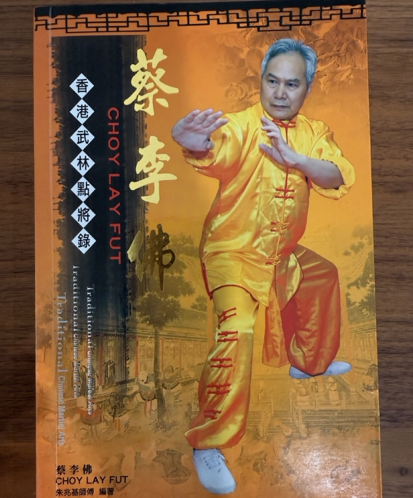

Books Authored by Grand Master Chu
During the 1970s, Grand Master Chu authored a series of books on Choy Lee Fut Kung Fu, covering topics such as Wooden Dummy Techniques, Dragon Form, Tiger Form, and Snake Form.

Sap Ji Kau Da, Ng Lun Ma (2009)
Wooden Dummy Techniques (70s)
Dragon Style (70s)
Snake and Tiger Form (70s)
Choy Lee Fut Magazine 1 (70s)
Choy Lee Fut Magazine 2 (70s)
Choy Lee Fut Magazine 3 (70s)
Choy Lee Fut Magazine 4 (70s)
Choy Lee Fut Magazine 5 (70s)

Choy Lee Fut Magazine 6 (70s)
Choy Lee Fut Magazine 7 (70s)
Choy Lee Fut Magazine 8 (70s)
Choy Lee Fut Magazine 9 (70s)
Some Photos provided by Sifu Eric Chu 朱建霖師傅.
Thank you for preserving the legacy of Choy Lee Fut Kung Fu.